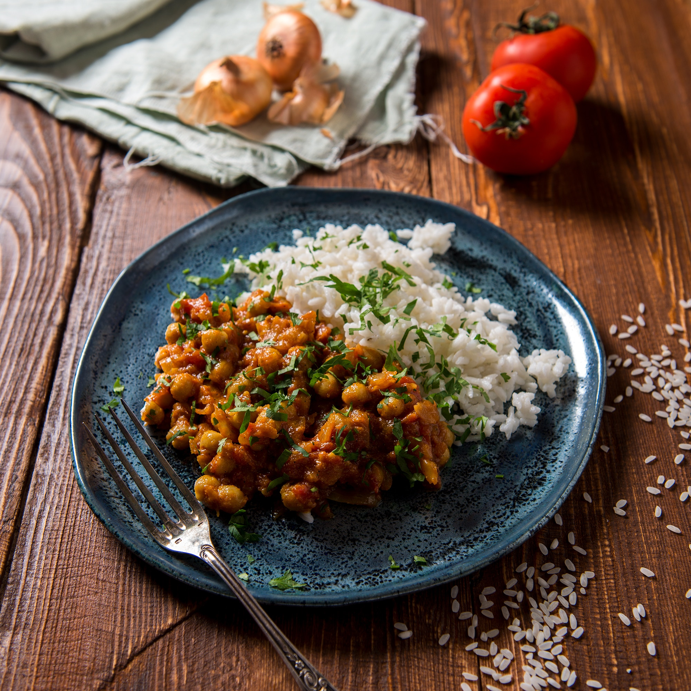

안녕 나를 소개하지 이름 허유빈 취미는 연애, 독서, 쿠키런, 마카롱 맛집 찾기. 요즘 즐겨듣는 노래는 Michael Jackson의 Man in the Mirror! 제일 좋아하는 음식은 카레, 제일 좋아하는 디저트는 당연히 커피와 마카롱👀
좀 더 구체적으로 설명하자면, 최근에 갔던 카레집 중에서 가장 마음에 들었던 곳은 경복궁 역에 위치한 고가빈 커리하우스다. 마음에 들었던 첫번째 이유는 바로 경복궁에 위치하고 있기 때문이다. 경복궁 동네는 한적하고 고즈넉해서 개인적으로 좋아한다. 그리고 두번째 이유는 카레를 리필해준다. 카레를 국처럼 먹는걸 좋아해서 매번 양이 모자랐는데 이곳은 걱정없이 먹을 수 있다. 그리고 마지막으로 카레리뷰를 쓸 수 있는 종이가 제공된다. 다 먹은 후 다시한번 맛을 떠올릴 수 있는 시간을 주는 것 같아 이곳을 좋아하게 되었다.